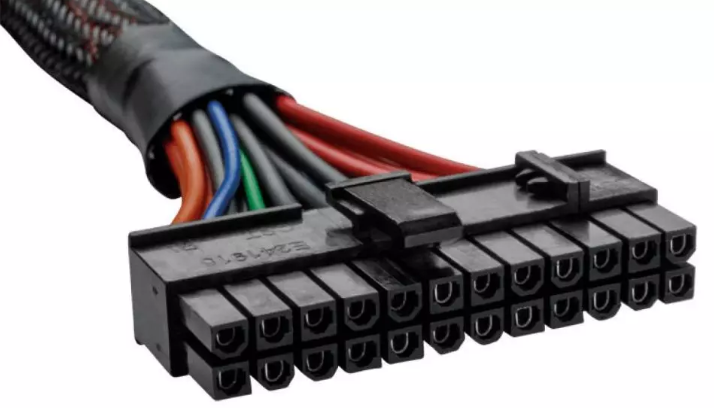
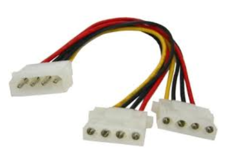
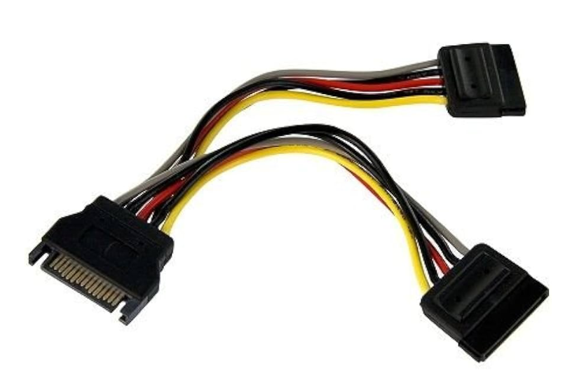
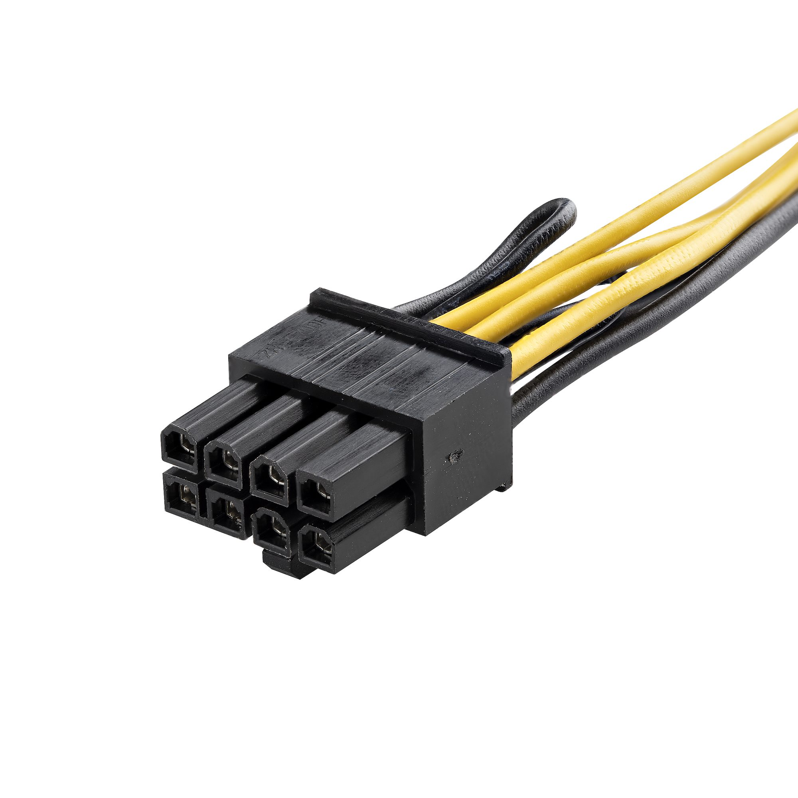
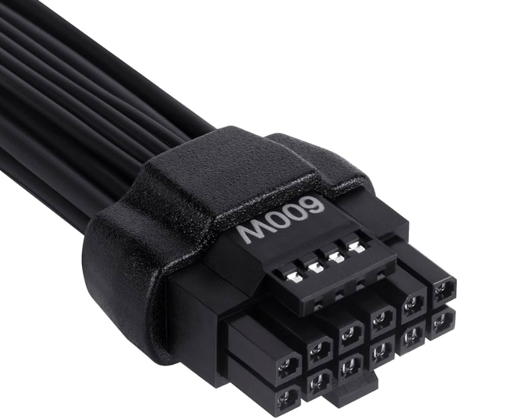
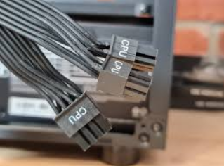
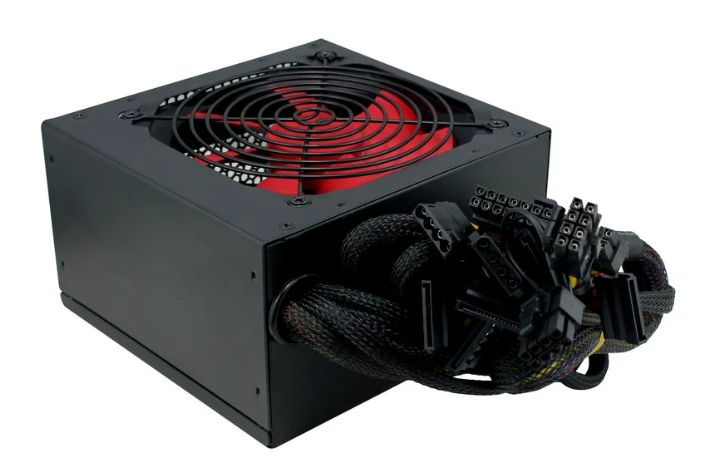
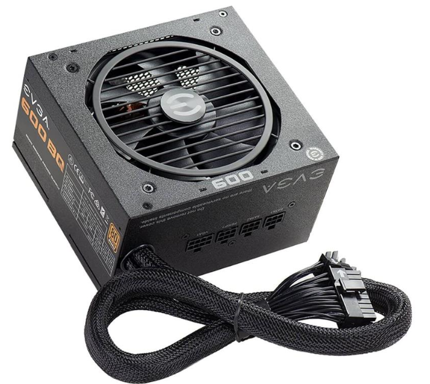
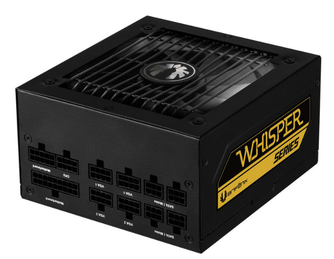

Fuente de Alimentacion
¿Qué es una fuente de alimentación?
Una fuente de alimentación es un componente esencial de cualquier dispositivo electrónico ya que es ella
quien se encarga de darle vida. En cualquier equipo, por pequeño que sea, siempre hay una fuente de
alimentación, aunque no la veamos. Desde smartphones, hasta televisores y ordenadores, todos tienen un
componente que se encarga de hacer lo que una fuente de alimentación hace, que es gestionar la entrada de
energía desde la red y adaptarla para darle energía al equipo. Una fuente de alimentación, por lo tanto, es
un dispositivo que se encarga proporcionar la corriente justa y necesaria a un equipo electrónico.
En los ordenadores de sobremesa, la fuente de alimentación se encuentra generalmente en la parte inferior de
la torre (en cajas antiguas se encuentra en la superior), y muchas cajas de ordenador optan por incorporar
un compartimento para separarla del resto y ya de paso ocultar todos los cables salientes de ella. En
smartphones, portátiles y cualquier dispositivo electrónico, esta fuente de alimentación se encuentra fuera
del dispositivo, donde habitualmente llamamos cargador o adaptador de corriente.
Siguiendo con los ordenadores, que es donde nos centraremos en esta definición, existen fuentes de
alimentación modulares y semi-modulares, de manera que los cables son total o completamente desmontables. De
esta manera, una fuente de alimentación modular mejora el flujo de aire del PC ya que solo cuenta con los
cables que se necesitan.
Las fuentes de alimentación para PCs convierten la energía de la red eléctrica (230 V en Europa, 120 V en
Norteamérica) en tensiones que puede manejar el ordenador, hasta 12 V para algunos componentes. Esta
conversión no es perfecta y por ello se pierde energía en el proceso. El estándar que cualifica la
eficiencia de una fuente de alimentación es el 80 PLUS y existen las certificaciones Bronze, Silver, Gold,
Platinum y Titanium, en orden ascendente de eficiencia. A mayor eficiencia, la fuente desperdiciará menos
energía, lo que hará que consuma menos y se caliente menos.
Cable ATX

Cable que da alimentación a la placa base
Cable Molex

Se puede usar para discos duros, disqueteras o ventiladores
Cable SATA

Se puede usar para discos duros, disqueteras o ventiladores
Es más común que el cable Molex
Cable PCIe

Se usa para dar alimentación a las tarjetas gráficas
Tienen 6+2 pines
Cable PCIe 5.0

Cable usado para las últimas gráficas de Nvidia, otorga hasta 600W
Cable CPU

Cable usado para dar alimentación a la CPU
Modularidad
Fuentes No Modulares
Las fuentes de alimentación no modulares tienen todos los cables fijos,por tanto no se pueden quitar cables
individuales según sea necesario. Estas unidades son más económicas y tienen una instalación simple y
directa. Son ideales para usuarios que priorizan un costo inicial más bajo y una instalación sencilla. Sin
embargo, la gestión de cables es algo más complicada, lo que puede resultar en mayor desorden dentro del
chasis y posible obstrucción del flujo de aire. Son adecuadas para tareas de oficina y uso general donde el
rendimiento extremo no es necesario, como navegación web, procesamiento de textos y tareas administrativas.

Fuentes Semi Modulares
Las fuentes de alimentación semi modulares tienen algunos cables fijos, como el conector ATX de 24 pines y el
conector EPS de 4/8 pines para la CPU, mientras que otros cables son desmontables. Este tipo de PSU ofrece
un equilibrio entre costo y flexibilidad. Mejoran la gestión de cables en comparación con las no modulares
al permitir quitar cables innecesarios, lo que contribuye a una organización interna más ordenada y un mejor
flujo de aire. Aunque aún pueden quedar algunos cables no utilizados ocupando espacio, son recomendadas para
sistemas de juego de gama media y estaciones de trabajo donde la organización interna y el flujo de aire son
importantes.

Fuentes Modulares
Las fuentes de alimentación modulares permiten que todos los cables sean desmontables, lo cual facilita una
gestión de cables más limpia y mejora el flujo de aire dentro del chasis. Ofrecen máxima flexibilidad en la
gestión de cables y contribuyen a un interior más limpio y organizado. A pesar de ser las más costosas, son
ideales para gamers de alta gama y usuarios que realizan overclocking, así como para configuraciones donde
la estética y la gestión del espacio interno son cruciales. La inversión adicional se justifica por la
mejora en la organización interna y la eficiencia térmica.

Eficiencia Engergética
Las fuentes de alimentación para PCs convierten la energía de la red eléctrica (230 V en Europa, 120 V en
Norteamérica) en tensiones que puede manejar el ordenador, hasta 12 V para algunos componentes. Esta
conversión no es perfecta y por ello se pierde energía en el proceso. El estándar que cualifica la
eficiencia de una fuente de alimentación es el 80 PLUS y existen las certificaciones Bronze, Silver, Gold,
Platinum y Titanium, en orden ascendente de eficiencia. A mayor eficiencia, la fuente desperdiciará menos
energía, lo que hará que consuma menos y se caliente menos.